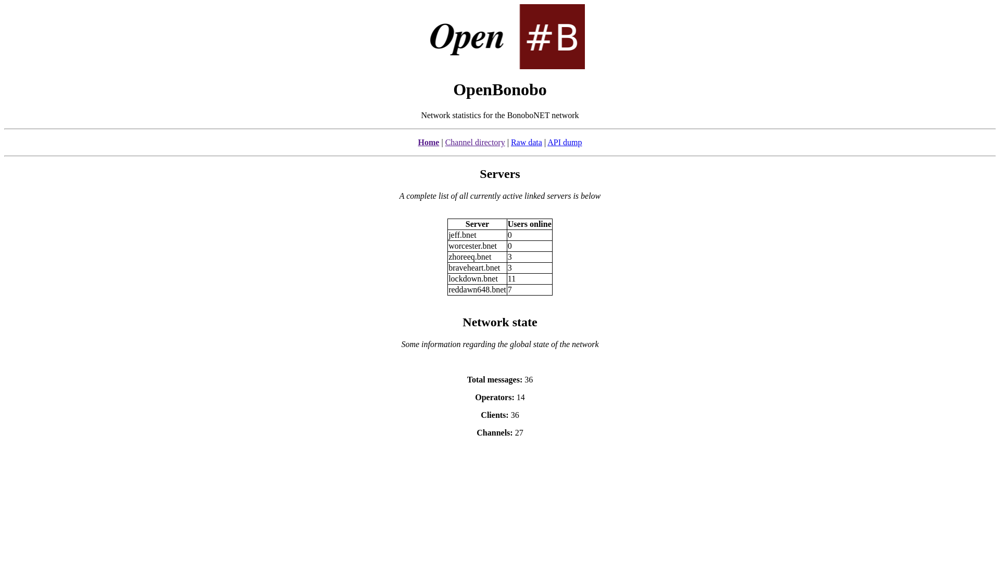

OpenBNET
OpenBNET is a lightweight daemon that runs a web server that provides an API endpoint for getting information about the global BonoboNET IRC network as well as providing a cute little status page regarding this information.

Configuring unrealircd
unrealircd will need to be configured for this piece of software to work. This is because OpenBNET requires a UNIX domain socket to connect to over which the IRC daemon provides the needed global state information.
Installing the module
We must first install the module such that the shared object file .so (the plugin) becomes available for the IRC daemon to dynamically
link in at runtime whenever it appears in the configuration file (seen in the next step):
To do this you will need to be in your unrealircd source directory where the unrealircd binary is present, then run:
Configuring the module
We must now configure both unrealircd to know that the module is available, this is done with the following line:
And then we must configure the module itself:
It is important that the loadmodule call is done first before using the wwwstats block.
Configuring OpenBNET
This is taken directly from the OpenBNET GitHub repository.
Setting up
You will need the following and can install them easily:
python3flaskpip
You will need to configure the third/wwwstats module as well, information on doing so can be found here.
Usage
Firstly grab all the files in this repository, then:
The next thing to do will be to set the following environment variables:
OPENBNET_BIND_ADDR- The addresses to listen on (for the web server)
OPENBNET_BIND_PORT- The port to listen on (for the web server)
UNREAL_SOCKET_PATH- This is the path to the unrealircd
third/wwwstatsUNIX domain socket
You can then run it like such:
Systemd-unit
There is an example systemd unit file included in the repository as openbnet.service
Custom branding
You can adjust the branding in obnet.py by taking a look at the following: